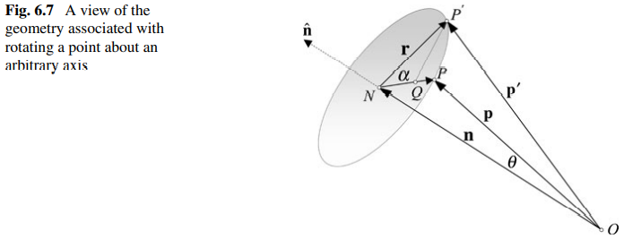
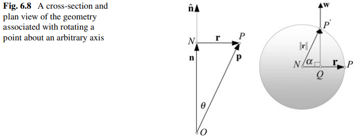

By "Equation (5.3)" of Quaternions for Computer Graphics, a
quaternion can be written as q=w+xi+yj+zk=[s,v] where
s=w
is a real number and v=[x,y,z] is a
vector in 3D space.
1-1-1. Multiplication
By "Equation (5.9)" of Quaternions for Computer Graphics, we
have the multiplication of quaternions q0q1=[s0,v0][s1,v1]=[s0s1−v0⋅v1,s0v1+s1v0+v0×v1].
1-1-2. Inner Product
By Inner Product Space of
Wikipedia, we have the inner product of the quaternions ⟨q0,q1⟩=⟨[s0,v0],[s1,v1]⟩=s0s1+v0⋅v1=w0w1+x0x1+y0y1+z0z1.
By the multiplication of quaternions, we have that (q0q1)∗=q1∗q0∗. The lengthy calculation is provided by "Equation (5.10)" and "Equation (5.11)" of Quaternions for Computer Graphics.
1-1-4. Norm
By "5.12 The Conjugate" of Quaternions for Computer Graphics, we
have the norm of a quaternion ∥q∥2=qq∗=[s,v][s,−v]=[s2−v⋅(−v),s(−v)+sv+v×(−v)]=[s2+∣v∣2,0]=s2+∥v∥2=w2+x2+y2+z2=⟨q,q⟩⇒∥q∥=⟨q,q⟩.
By "5.16 Inverse Quaternion" of Quaternions for Computer Graphics, we
have the inverse of the quaternion qq−1=1=[1,0]⇒q∗qq−1=q∗⇒(q∗q)q−1=q∗⇒∥q∥2q−1=q∗⇒q−1=∥q∥2q∗.
1-1-7. Bijection between
Rotation Transforms and Unit Quaternions
Each rotation transform can be represented by a unit quaternion. And conversely, each unit quaternion
can represent a rotation transform.
1-1-7-1. Mapping the Rotation
Transform to the Unit Quaternion
Let q=[cos2θ,sin2θn] where
n is a unit vector in 3D space.
First, we would like to prove that q is
a unit quaternion.
The norm of of q
is calculated as ∥q∥2=cos22θ+sin22θ∣n∣2=cos22θ+sin22θ=1. This means that the norm of q
is one. And thus, q
is a unit quaternion.
Second, we would like to prove that q
represents the rotation transform about the axis n by the angle θ.
Let p=[0,p] where
p is the position in 3D space.
Let p′=qpq−1=[s′,p′] where
p′ is the new position of the position p after the transfrom. Actually, we will later prove that we always have s′=0. Thus, these variable can be ignored.
The inverse of of q
is calculated as q−1=∥q∥2[cos2θ,−sin2θn]=[cos2θ,−sin2θn].
By the multiplication of quaternions, we have that p′=qpq−1=[cos2θ,sin2θn][0,p][cos2θ,−sin2θn]=[0,(1−cosθ)(n⋅p)p+cosθp+sinθn×p]. The
lengthy calculation is provided by "Equation (7.13)" of Quaternions for Computer Graphics.
This means that s′=0 and p′=(1−cosθ)(v⋅p)p+cos2θp+sin2θv×p.
By "Fig. 6.7" and "Fig. 6.8" of Quaternions for Computer Graphics,
we have p′ is exactly the new position of the position p after the rotation transform about the axis n by the angle θ.
Proof


TODO
1-1-7-2. Mapping the Unit
Quaternion to the Rotation Transform
Let q=[s,v] be the
unit quaternion where s2+∥v∥2=1.
We would like to prove that there exists the θ and the n such that q=[cos2θ,sin2θn] and n is a unit vector in 3D space.
Since s2+∥v∥2=1, we can find the θ such that cos2θ=s and sin2θ=∥v∥. And let n=∥v∥v. Thus, we have
q=[cos2θ,sin2θn]=[s,v].
This means that the rotation transform about the axis n by the angle θ is the rotation transform
represented by the unit quaternion q.
1-2. Dual Numbder
By "A.1 Dual Numbers" of [Kavan 2008], a dual number can be written as a^=a0+aϵϵ, where a0 and aϵ are real numbers, and ϵ is a basis element such that 1ϵ=ϵ1=ϵ and ϵϵ=0.
1-2-1. Multiplication
By "Equation (17)" of [Kavan 2008], we have the multiplication of dual numbers a^b^=(a0+aϵϵ)(b0+bϵϵ)=a0b0+(a0bϵ+b0aϵ)ϵ.
1-2-2. Conjugate
By "A.1 Dual Numbers" of [Kavan 2008], we have the conjugate of a dual number a^=a0+aϵϵ=a0−aϵϵ.
1-2-2-1. Distributive Property
By "Lemma 6" of [Kavan 2008], we have that a^b^=a^b^.
Proof
By the multiplication of dual numbers, we have that a^b^=(a0+aϵϵ)(b0+bϵϵ)=a0b0+(a0bϵ+b0aϵ)ϵ=a0b0−(a0bϵ+b0aϵ)ϵ=(a0−aϵϵ)(b0−bϵϵ)=a^b^.
1-2-3. Square Root
By "Equation (19)" of [Kavan 2008], for any dual number a^=a0+aϵϵ such that a0>0, we have the square root of the dual number,
a^=a0+aϵϵ=a0+2a0aϵϵ.
Proof
We would like to find a dual number b^=b0+bϵϵ such that (b0+bϵϵ)(b0+bϵϵ)=a0+aϵϵ, namely, b^=a^.
By the multiplication of dual numbers, we have that a0+aϵϵ=(b0+bϵϵ)(b0+bϵϵ)=b02+2b0bϵϵ. Thus, we have b02=a0 and aϵ=2b0bϵ. Since a0>0, we have b0=a0 and bϵ=2a0aϵ.
1-3. Dual Quaternion
By "A.2 Dual Quaternions" of [Kavan 2008], a dual quaternion can be deemed not only a
quaternion whose elements are dual numbers, but also a dual number whose elements are quaternions. This means
that we have not only q^=qw^+qx^i+qy^j+qz^k
where qw^, qx^, qy^ and qz^ are dual numbers, but also q^=q0+qϵϵ where q0 and qϵ are quaternions.
1-3-1. Multiplication
Since a dual quaternion can be deemed a dual number whose elements are quaternions, by the
multiplication of the dual numbers, we have the multiplication of dual quaternions p^q^=(p0+pϵϵ)(q0+qϵϵ)=p0q0+(p0qϵ+pϵq0)ϵ
where p0q0, p0qϵ and pϵq0 are calculated by the multiplication of quaternions.
1-3-2. Conjugate
1-3-2-1. First Kind - Quaternion Style
By "A.2 Dual Quaternions" of [Kavan 2008], we have the quaternion style conjugate of a dual
quaternion q^∗=(q0+qϵϵ)∗=q0∗+qϵ∗ϵ.
1-3-2-2. Second Kind - Dual Number Style
By "A.2 Dual Quaternions" of [Kavan 2008], we have the dual number style conjugate of a dual
quaternion q^=q0+qϵϵ=q0−qϵϵ.
1-3-2-3. Commutative Property
By "A.2 Dual Quaternions" of [Kavan 2008], we have q^∗=q^∗=q0∗−qϵ∗ϵ. And thus, we do NOT distinguish
between q^∗ and q^∗ any more.
By "Lemma 10" of [Kavan 2008], we have that (p^q^)∗=q^∗p^∗.
Proof
By the multiplication of dual quaternions, we have that (p^q^)∗=((p0+pϵϵ)(q0+qϵϵ))∗=(p0q0+(p0qϵ+pϵq0)ϵ)∗.
By the quaternion style conjugate of the dual quaternion, we have that (p0q0+(p0qϵ+pϵq0)ϵ)∗=(p0q0)∗+(p0qϵ+pϵq0)∗ϵ.
By the distributive property of the conjugate of the quaternions, we have that (p0q0)∗+(p0qϵ+pϵq0)∗ϵ=(p0q0)∗+((p0qϵ)∗+(pϵq0)∗)ϵ=q0∗p0∗+(q0∗pϵ∗+qϵ∗p0∗)ϵ=(q0+qϵϵ)(p0+pϵϵ)=q^∗p^∗.
1-3-3. Norm
By "Equation (22)" of [Kavan 2008], for any dual quaternion q^=q0+qϵϵ such that ∥q0∥=0, we have the norm of the dual qunternion
∥q^∥=q^q^∗=(q0+qϵϵ)(q0−qϵϵ)=∥q0∥+∥q0∥⟨q0,qe⟩ϵ.
Proof
By the multiplication of dual quaternions, we have that (q0+qϵϵ)(q0−qϵϵ)=∥q0∥2+(q0qϵ∗+qϵq0∗)ϵ.
First, we would like to prove that qϵ∗+qϵq0∗=s0sϵ+v0⋅vϵ=⟨q0,qϵ⟩.
By the multiplication of quaternions, we have that q0qϵ∗+qϵq0∗=[s0,v0][sϵ,−vϵ]+[sϵ,vϵ][s0,−v0]=[s0sϵ−v0⋅(−vϵ),s0(−vϵ)+sϵv0+v0×(−vϵ)]+[sϵs0−vϵ⋅(−v0),sϵ(−v0)+s0vϵ+vϵ×(−v0)]=[s0sϵ−v0⋅(−vϵ)+sϵs0−vϵ⋅(−v0),s0(−vϵ)+sϵv0+v0×(−vϵ)+sϵ(−v0)+s0vϵ+vϵ×(−v0)]=[2(s0sϵ+v0⋅vϵ),0]=2(s0sϵ+v0⋅vϵ).
By the inner product of quaternions, we have that q0qϵ∗+qϵq0∗=s0sϵ+v0⋅vϵ=⟨q0,qϵ⟩.
Second, we would like to prove that ∥q0∥2+(q0qϵ∗+qϵq0∗)ϵ=∥q0∥+∥q^∥⟨q0,qe⟩ϵ.
Evidently, the real part of ∥q0∥2+(q0qϵ∗+qϵq0∗)ϵ is a real number. And since q0qϵ∗+qϵq0∗=2⟨q0,qϵ⟩, the dual part of ∥q0∥2+(q0qϵ∗+qϵq0∗)ϵ is a real number. This means that ∥q0∥2+(q0qϵ∗+qϵq0∗)ϵ is a dual number.
By the square root of the dual number, since ∥q0∥=0, we have that ∥q0∥2+(q0qϵ∗+qϵq0∗)ϵ=∥q0∥2+2⟨q0,qϵ⟩ϵ=∥q0∥+2∥q0∥22⟨q0,qϵ⟩ϵ=∥q0∥+∥q0∥⟨q0,qϵ⟩ϵ.
1-3-3-4. Distributive Property
By "Lemma 11" of [Kavan 2008], we have that ∥p^q^∥=∥p^∥∥q^∥.
Proof
By the distributive property of the quaternion style conjugate of the dual quaternions, we have
that ∥p^q^∥2=(p^q^)(p^q^)∗=(p^q^)(q^∗p^∗)=p^(q^q^∗)p^∗=p^∥q^∥2p^∗=∥q^∥2p^p^∗=∥q^∥2(p^p^∗)=∥q^∥2∥p^∥2=∥p^∥2∥q^∥2.
1-3-4. Unit Dual Quaternion
By "A.2 Dual Quaternions" of [Kavan 2008], a unit dual quaternion is a dual quaternion of
which the norm is one. By the norm of the dual quaternion , we have that ∥q∥=1 and ⟨q0,qϵ⟩=0. This means that a unit dual quaternion is a
dual quaternion such that the real part is a unit quaternion and the inner product of the real part and the dual
part is zero.
1-3-5. Bijection between
Rigid Transforms and Unit Dual Quaternions
By [Kavan 2007] and [Kavan 2008], the rigid transform is the composition of rotation transform and
translation transform.
By "Lemma 12" of [Kavan 2008], we have that each rigid transform can be represented by a
unit dual quaternion, and conversely, each unit dual quaternion can represent a rigid transform.
1-3-5-1. Mapping the Rigid
Transform to the Unit Dual Quaternion
Let r^=r0+[0,0]ϵ where r0 is a unit quaternion, namely, ∥r0∥=1.
Let t^=[1,0]+[0,21t]ϵ where t is a vector in 3D space.
First, we would like to prove that q^ is a unit dual quaternion.
The norm of of r^ is calculated as ∥r^∥=∥r0∥+∥r0∥⟨[0,0],r0⟩ϵ=1+10ϵ=1.
And the norm of t^ is calculated as ∥t^∥=∥[1,0]∥+[1,0]⟨[1,0],[0,21t]⟩ϵ=1+0ϵ=1. This means that the norm of r0 is one.
By the distributive property of the norm of the dual quaternions, we have that ∥q^∥=∥t^r^∥=∥t^∥∥r^∥=1. This means that the norm of q^ is one. And thus, q^ is a unit dual quaternion.
Second, we would like to prove that q^ represents the rigid transform composed of the rotation transform represented by the unit quaternion r0 and the translation transform represented by the vector t.
Let p^=[1,0]+[0,p]ϵ where p is the position in 3D space.
Let p′^=q^p^q^∗=p′0+[s′,p′] where
p′ is the new position of the position p after the transfrom. Actually, we will later prove that we always have p′0=[1,0] and
s′=0. Thus, these two variables can be
ignored.
By the distributive property of the quaternion style conjugate of the dual quaternions, we have
that q^∗=(t^r^)∗=r^∗t^∗.
By the distributive property of the conjugate of dual numbers, we have that r^∗t^∗=r^∗t^∗.
By the commutative property of the conjugate of the dual quaternions, we have that r^∗=r0∗−rϵ∗ϵ=r0∗=1r0∗=∥r0∥2r0∗=r0−1 and t^∗=t0∗−tϵ∗ϵ=[1,0]−([0,21t])∗ϵ=[1,0]−[0,−21t]ϵ=[1,0]+[0,21t]ϵ.
Thus, we have that p′^=q^p^q^∗=(t^r^)p^(t^r^)∗=(t^r^)p^(r^∗t^∗)=(([1,0]+[0,21t]ϵ)r0)p^(r0−1([1,0]+[0,21t]ϵ))=(([1,0]+[0,21t]ϵ)(r0([1,0]+[0,p]ϵ)r0−1)([1,0]+[0,21t]ϵ)).
By the multiplication of quaternions, we have that (([1,0]+[0,21t]ϵ)(r0([1,0]+[0,p]ϵ)r0−1)([1,0]+[0,21t]ϵ))=(([1,0]+[0,21t]ϵ)([r0r0−1,0]+[0,r0pr0−1]ϵ)([1,0]+[0,21t]ϵ))=(([1,0]+[0,21t]ϵ)([1,0]+[0,r0pr0−1]ϵ)([1,0]+[0,21t]ϵ))=[1,0]+[0,r0pr0−1+21t+21t]ϵ=[1,0]+[0,r0pr0−1+t]ϵ. This means that p′0=[1,0], s′=0 and p′=r0pr0−1+t.
By the bijection between rotation transforms and unit quaternions, we have that r0p^r0−1 is the new position of the position p after the rotation transform represented by the unit quaternion r0.
Evidently, r0pr0−1+t is the new position of the position r0p^r0−1 after the translation transform represented by the vector t.